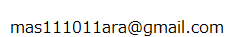
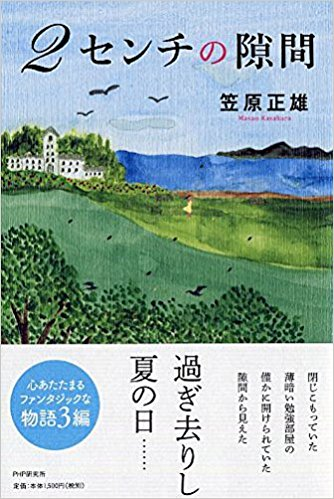

＊カラスの大王物語 笠原正雄
2014年10月に『カラスの大王物語』をHPにアップしました。そして4年の間に1000人に近い沢山の人達にご愛読いただきました。深く感謝しています。
この4年間に
“手に持ってペラペラ好きなページをめくって読みたいなぁ……”
といった内容のお話を読んで下さった方々から戴きました。
ここ1,2年考え続けましたが、私もまた
“好きなページをペラペラめくりながら読んでみたい”
“コーヒーラウンジで本を片手にコーヒーやティーを飲みながら読んでみたい”
と思いました。
そしてこの3月念願叶って本を出版し、世に送り出すことができました。
お近くの書店にてお申し込み下さい。Amazonで購入することもできます。

どんな本か具体的に分かっていただけるようPART1を残しておきます。
よろしくお願い申し上げます。
引き続き、つくり話第6作目『ムクノキの大王物語』を執筆しています。
5月にはPART1をHPにアップ予定でございます。引き続き当HPをご訪問下さいまして、お読み下さるようお願い申し上げます。
PART1『ハッピー』の巻 2014/10/01 upload
PART2『カラスの大王の森』の巻 2014/10/01 upload
PART3『裁判』の巻 2014/10/22 upload
PART4『大脱走』の巻 2014/10/22 upload
PART5『不思議の島』の巻 2014/10/22 upload
PART6『ミィミィ村長』の巻 2014/11/01 upload
PART7『サマーフェスティバル』の巻 2014/11/01 upload
PART8『宴の後』の巻 2014/11/18 upload
PART9『ボートはどこへ向かうの？』の巻 2014/11/18 upload
PART10『目が覚めれば……』の巻 2014/12/04 upload
PART11『再会』の巻 2014/12/04 upload
後記その1 2014/12/04 upload
後記その2 2014/12/04 upload